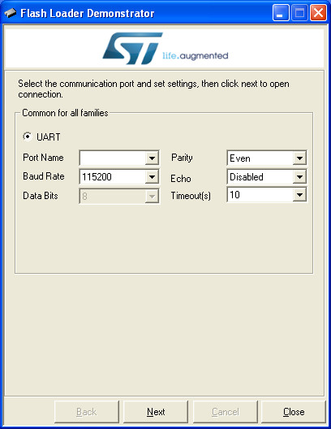

如果沒有ST-LINK V2燒錄器，使用者也可以透過UART下載燒錄，只要安裝Flash Loader Demonstrator即可
參考資訊：
https://sourceforge.net/projects/stm32flash/files/
司徒目前使用的編譯器是GNU GCC，燒錄軟體則是OpenOCD，安裝方式如下：
$ sudo apt-get install gcc-arm-none-eabi -y $ cd $ git clone https://github.com/ntfreak/openocd $ cd opebocd $ git submodule update --init --recursive $ ./bootstrap $ ./configure $ make $ sudo make install
燒錄器則是使用ST-LINK V2
如果沒有ST-LINK V2燒錄器，使用者也可以透過UART下載燒錄，只要安裝Flash Loader Demonstrator即可
